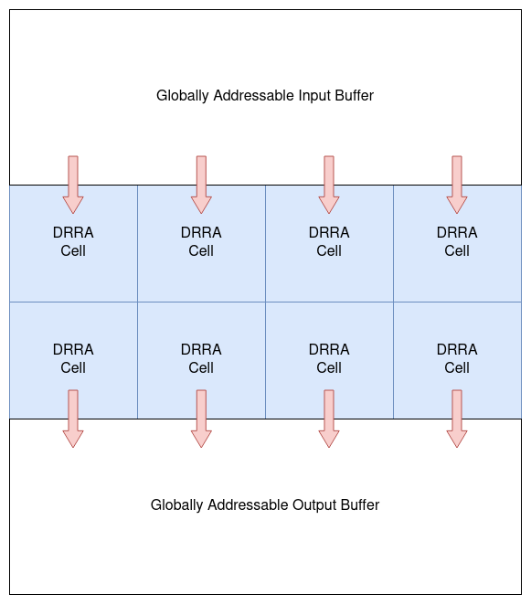

DRRA-based AlImp Design Tutorial (v4)
Note
This page is written for vesyla-suite version 4 and only works for DRRA-2 fabric.
Introduction
Programming Model
Each algorithm compiled by vesyla-suite will be mapped to a DRRA fabric. The DRRA-2 fabric has a globally addressable input buffer and a globally addressable output buffer, as shown in the following figure.

The input buffer is used to store the input data of the algorithm. The output buffer is used to store the output data of the algorithm. The input buffer and the output buffer are connected to the DRRA fabric through the input and output ports of the fabric. The input and output ports are used to connect the DRRA fabric to the outside world.
Only the top row of DRRA-2 cells have access to the input buffer and only the bottom row of DRRA-2 cells have access to the output buffer. The input bandwidth and output bandwidth are determined by the number of columns of the DRRA fabric.
The assumption of giant globally addressable memory buffers is not realistic. However, these buffers will not be implemented as it is. Instead, application-level synthesis (ALS) tool will synthesize the input and output buffers to the actual hardware. The input and output buffers are used to simplify the algorithmic compilation process.
Initialization
In any directory, you can initialize a DRRA style project by using the command:
vs-init -s drra
If this directory has already been initialized, you can force the re-initialization by using the command:
vs-init -f -s drra
You will notice that several files has been created in this directory. One of the files is arch.json. This file contains the architecture description. You can modify this file to change the resources that are included on the fabric. The configuration file is described in the following section.
Another file you need to modify is main.cpp. You need to define some of the functions in this file. The functions are described in the following section.
The third location you need to modify is the asm folder. This folder contains all the code segments in assembly format. The name of each code segment should be a unique number. For example 0.txt, 1.txt.
Implementation
We use a simple example to demonstrate the implementation of algorithms. The example is a element-wise addition of two vectors. It has two inputs: vector A and vector B. It has one output: vector C. All of them have size equal to 16. The element-wise addition is defined as: C[i] = A[i] + B[i].
We first define the hardware architecture in arch.json. It should include three cells: cell [0,0], cell [1,0], and cell [2,0]. Cell [0,0] is used to read data from input buffer, and cell [2,0] is used to write result to output buffer. Cell [1,0] will be the one that does the actual addition.
{
"platform": "drra",
"resources": [
{
"name": "iosram",
"size": 4,
"word_input_port": 0,
"word_output_port": 0,
"bulk_input_port": 2,
"bulk_output_port": 2,
"custom_properties": [
{
"key": "depth",
"val": 64
}
]
},
{
"name": "swb",
"size": 1,
"word_input_port": 0,
"word_output_port": 0,
"bulk_input_port": 0,
"bulk_output_port": 0
},
{
"name": "dpu",
"size": 2,
"word_input_port": 2,
"word_output_port": 1,
"bulk_input_port": 0,
"bulk_output_port": 0
},
{
"name": "rf",
"size": 1,
"word_input_port": 1,
"word_output_port": 1,
"bulk_input_port": 1,
"bulk_output_port": 1,
"custom_properties": [
{
"key": "depth",
"val": 64
}
]
}
],
"controllers": [
{
"name": "controller_io",
"size": 8,
"iram_size": 64
},
{
"name": "controller_normal",
"size": 16,
"iram_size": 64
}
],
"cells": [
{
"name": "drra_cell_input",
"controller": "controller_io",
"resource_list": ["swb", "iosram"]
},
{
"name": "drra_cell_output",
"controller": "controller_io",
"resource_list": ["swb", "iosram"]
},
{
"name": "drra_cell_normal",
"controller": "controller_normal",
"resource_list": ["swb", "rf", "rf", "rf", "dpu"]
}
],
"fabric": {
"height": 2,
"width": 1,
"cell_lists": [
{
"coordinates": [{ "row": 0, "col": 0 }],
"cell_name": "drra_cell_input"
},
{
"coordinates": [{ "row": 1, "col": 0 }],
"cell_name": "drra_cell_normal"
},
{
"coordinates": [{ "row": 2, "col": 0 }],
"cell_name": "drra_cell_output"
}
],
"custom_properties": []
},
"interface": {
"input_buffer_depth": 1024,
"output_buffer_depth": 1024
}
}
Before we implement the algorithm in main.cpp, we need to define the input and output data layout in input and output buffer. Both input and output buffer has width that equals to 256 bits. So, each row can be divided by 16 16-bit chunks, each of which stores an element of A, B, or C. The layout is described by the following table.
Input Buffer:
+------+-----+-----+-----+-----+-----+-----+-----+-----+-----+-----+-----+-----+-----+-----+-----+-----+
| addr | CHK0| CHK1| CHK2| CHK3| CHK4| CHK5| CHK6| CHK7| CHK8| CHK9|CHK10|CHK11|CHK12|CHK13|CHK14|CHK15|
+------+-----+-----+-----+-----+-----+-----+-----+-----+-----+-----+-----+-----+-----+-----+-----+-----+
| 0 | A[0]| A[1]| A[2]| A[3]| A[4]| A[5]| A[6]| A[7]| A[8]| A[9]|A[10]|A[11]|A[12]|A[13]|A[14]|A[15]|
| 1 | B[0]| B[1]| B[2]| B[3]| B[4]| B[5]| B[6]| B[7]| B[8]| B[9]|B[10]|B[11]|B[12]|B[13]|B[14]|B[15]|
+------+-----+-----+-----+-----+-----+-----+-----+-----+-----+-----+-----+-----+-----+-----+-----+-----+
Output Buffer:
+------+-----+-----+-----+-----+-----+-----+-----+-----+-----+-----+-----+-----+-----+-----+-----+-----+
| addr | CHK0| CHK1| CHK2| CHK3| CHK4| CHK5| CHK6| CHK7| CHK8| CHK9|CHK10|CHK11|CHK12|CHK13|CHK14|CHK15|
+------+-----+-----+-----+-----+-----+-----+-----+-----+-----+-----+-----+-----+-----+-----+-----+-----+
| 0 | C[0]| C[1]| C[2]| C[3]| C[4]| C[5]| C[6]| C[7]| C[8]| C[9]|C[10]|C[11]|C[12]|C[13]|C[14]|C[15]|
+------+-----+-----+-----+-----+-----+-----+-----+-----+-----+-----+-----+-----+-----+-----+-----+-----+
In main.cpp, you need to implement the following functions:
void init(): This function is used to initialize the input buffer.void model_l0(): This function is used to implement the algorithm in the level 0 model. It's a pure software implementation of the algorithm. It's used to verify the correctness of the algorithm.void model_l1(): This function is used to implement the algorithm in the level 1 model. It will be the input of vesyla-suite compiler. It's a software implementation of the algorithm with some hardware primitives. For syntax, plaese refer to Vesyla Programming Guide.
We implement these functions one by one.
The init() function is used to initialize the input buffer. It's a pure software implementation. The following code shows how to initialize the input buffer.
void init(){
// Set the seed for random number generator
srand((unsigned) time(NULL));
// Generate 32 random numbers in range [0,100) for both vector A and B
vector<int16_t> v(32);
for(auto i=0; i<32; i++){
v[i] = rand()%100;
}
// Write the random numbers to the input buffer at starting address 0, and the number of row to write is 2.
__input_buffer__.write<int16_t>(0, 2, v);
}
The model_l0() function is used to implement the algorithm in the level 0 model. It's a pure software implementation of the algorithm. It's used to verify the correctness of the algorithm. The following code shows how to implement the algorithm in the level 0 model.
void model_l0(){
// Read the input buffer to A. The starting address is 0, and the number of row to read is 1.
vector<int16_t> a = __input_buffer__.read<int16_t>(0, 1);
// Read the input buffer to B. The starting address is 1, and the number of row to read is 1.
vector<int16_t> b = __input_buffer__.read<int16_t>(1, 1);
// Add A and B
vector<int16_t> c(16);
for(auto i=0; i<16; i++){
c[i] = a[i] + b[i];
}
// Write the result C to the output buffer at starting address 0, and the number of row to write is 1.
__output_buffer__.write<int16_t>(0, 1, c);
}
Now, it's time to implement the algorithm in the level 1 model. The level 1 model should consists a set of function call of simulation request of the code segments stored in folder asm. In this example, we only need 1 code segment. Therefore, the level 1 model is very simple.
void model_l1(){
simulate_code_segment(0);
}
The level 1 model is not complete without the assembly code written in code segments. We need to write the assembly code in asm/0.txt. The following code shows the assembly code.
Simulation and Verification
To simulate the algorithm, simply run:
./run.sh
If the output shows the simulation is successful, then the algorithm is correct.